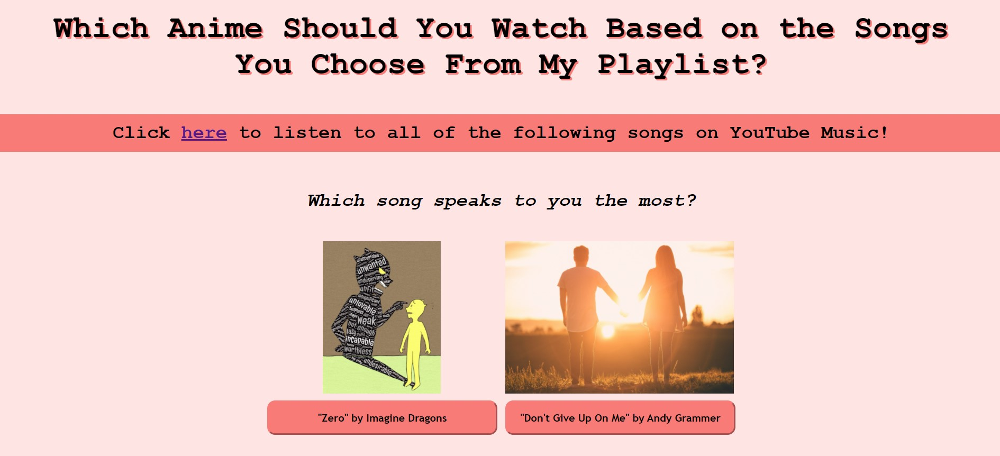

Portfolio
Inside Out Mental Health Game
This was the first game that I ever worked on, which I did in a large collaboration with my school’s Girls Who Code program during the summer of 2020. Our theme was mental health, and I came up with the idea of using the Pixar Movie "Inside Out" as inspiration. We eventually decided to create a point system that updates the values of particular emotions depending on the decisions that the player makes as they follow the storyline. You can play our Inside Out Mental Health Game here.
The Adventures of EOC: A Battle for the Planet
I created this game together with my friend and fellow GWC member Julie My Thai based on our club’s environmental justice theme during the first semester of the 2020-2021 school year. The game follows a character named EOC (inspired by U.S. Representative Alexandria Ocasio-Cortez, or AOC, with the “E” being a reference to the word “Environment”) as she works to save three different renewable energy facilities from coal industry tycoon Sir Cole’s attempts to sabotage their openings. The game is separated into 3 different levels, each following a new type of renewable energy facility and featuring a new style of game-play. You can play this game by clicking here.
Choose Your Own Learning Adventure!: Greek Mythology Edition
This was my first app, which I also created alongside my colleague Julie My Thai during the second semester of the 2020-2021 school year. Our club’s theme for that semester was entertainment, and as a fan of the famous book series "Percy Jackson and the Olympians," I wanted to do something related to Greek mythology! Julie is also a big fan of Greek mythology, so we decided to code and design an app where we could share some of our favorite stories, especially those highlighting women in Greek mythology, in addition to a little bit of feminist commentary! You can check out our app here.
Village Explorer

This was my first-ever 3D game that I designed using Unity during the summer of 2021! In Village Explorer, you are looking to move into a new home and have found yourself at Nelka Village. The goal is to spend a day exploring the area in and outside of the village walls to see if you'd like to move there. In order to do so, you must progress through the three defined areas of the map (Nelka Village, The Woods, and Arcadia Village) by collecting objects that act as “keys,” ultimately making your way from Nelka to Arcadia by nightfall. You can play Village Explorer on the simmer.io website.
“An Impending Fantasy”

During 2020, in collaboration with the All City Performing Arts Symphonic Band I, I combined short musical motifs of my own with those of fellow students, which I then arranged and remixed in order to create my first ever song called “An Impending Fantasy.” I used the Digital Audio Workstation (DAW) Audacity to do so. You can listen to my song "An Impending Fantasy" here.
"Dare to Run"
Using Earsketch, another DAW, and Python, I coded and arranged my song titled “Dare to Run” in 2021! Earsketch has hundreds of available sound samples that anyone can choose from to remix, arrange, and add effects onto. You can listen to my song "Dare to Run" here by pressing the green “run” button and then the green play button. Enjoy!
"Which Anime Should You Watch?" Quiz
This Buzzfeed-style quiz was the second project I completed during my participation in the Girls Who Code Summer Immersion Program. (My first project was the website you are currently reading!) The goal of this project was to grasp the basics of JavaScript in order to learn how to add interactivity to a website. You can take my quiz here. Also feel free to reach out to me at jmsoltys26@gmail.com at any time for music, anime, or book recommendations! :D